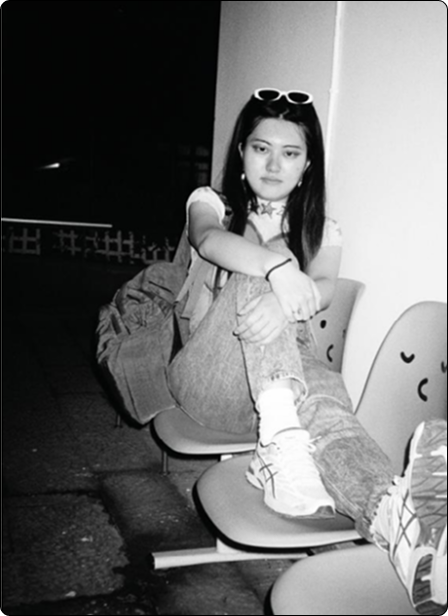

Bridging Human Intuition with Machine Intelligence.
Hi, I'm Xinyutong. Currently, I am navigating the intersection of Human-Computer Interaction (HCI) and Artificial Intelligence as a Master's student at KTH Royal Institute of Technology, with an upcoming residency at EPFL in 2026.
My journey began in Landscape Architecture—learning how people move through physical spaces—and has evolved into architecting how they interact with digital ones. Today, my focus lies in AI Product Management and MedTech, where I leverage XR, machine learning, and human-centric design to build tools that don't just function, but empower.